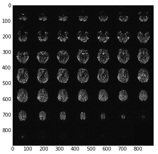

Siemens mosaic format#
Siemens mosaic format is a way of storing a 3D image in a DICOM image file. The simplest DICOM images only knows how to store 2D files. For example, a 3D image in DICOM is usually stored as a series of 2D slices, each slices as a separate DICOM image. . Mosaic format stores the 3D image slices as a 2D grid - or mosaic.
For example here are the pixel data as loaded directly from a DICOM image with something like:
import matplotlib.pylab as plt
import dicom
dcm_data = dicom.read_file('my_file.dcm')
plt.imshow(dcm_data.pixel_array)

Getting the slices from the mosaic#
The apparent image in the DICOM file is a 2D array that consists of blocks,
that are the output 2D slices. Let’s call the original array the slab, and
the contained slices slices. The slices are of pixel dimension
n_slice_rows x n_slice_cols. The slab is of pixel dimension
n_slab_rows x n_slab_cols. Because the arrangement of blocks in the
slab is defined as being square, the number of blocks per slab row and slab
column is the same. Let n_blocks be the number of blocks contained in the
slab. There is also n_slices - the number of slices actually collected,
some number <= n_blocks. We have the value n_slices from the
‘NumberOfImagesInMosaic’ field of the Siemens private (CSA) header.
n_row_blocks and n_col_blocks are therefore given by
ceil(sqrt(n_slices)), and n_blocks is n_row_blocks ** 2. Also
n_slice_rows == n_slab_rows / n_row_blocks, etc. Using these numbers we
can therefore reconstruct the slices from the 2D DICOM pixel array.
DICOM orientation for mosaic#
See DICOM patient coordinate system and DICOM voxel to patient coordinate system mapping. We want a 4 x 4 affine \(A\) that will take us from (transposed) voxel coordinates in the DICOM image to mm in the DICOM patient coordinate system. See (i, j), columns, rows in DICOM for what we mean by transposed voxel coordinates.
We can think of the affine \(A\) as the (3,3) component, \(RS\), and a (3,1)
translation vector \(\mathbf{t}\). \(RS\) can in turn be thought of as the
dot product of a (3,3) rotation matrix \(R\) and a scaling matrix \(S\),
where S = diag(s) and \(\mathbf{s}\) is a (3,) vector of voxel sizes.
\(\mathbf{t}\) is a (3,1) translation vector, defining the coordinate in
millimeters of the first voxel in the voxel volume (the voxel given by
voxel_array[0,0,0]).
In the case of the mosaic, we have the first two columns of \(R\) from the
\(F\) - the left/right flipped version of the ImageOrientationPatient
DICOM field described in DICOM affines again. To make a full
rotation matrix, we can generate the last column from the cross product
of the first two. However, Siemens defines, in its private
CSA header, a SliceNormalVector which gives the third column,
but possibly with a z flip, so that \(R\) is orthogonal, but not a
rotation matrix (it has a determinant of < 0).
The first two values of \(\mathbf{s}\) (\(s_1, s_2\)) are given by the
PixelSpacing field. We get \(s_3\) (the slice scaling
value) from SpacingBetweenSlices.
The SPM DICOM conversion code has a comment saying that mosaic DICOM images
have an incorrect ImagePositionPatient field. The
ImagePositionPatient field usually gives the \(\mathbf{t}\) vector.
The comments imply that Siemens has derived ImagePositionPatient
from the (correct) position of the center of the first slice (once the
mosaic has been unpacked), but has then adjusted the vector to point to
the top left voxel, where the slice size used for this adjustment is the
size of the mosaic, before it has been unpacked. Let’s call the correct
position in millimeters of the center of the first slice \(\mathbf{c} =
[c_x, c_y, c_z]\). We have the derived \(RS\) matrix from the calculations
above. The unpacked (eventual, real) slice dimensions are \((rd_{rows},
rd_{cols})\) and the mosaic dimensions are \((md_{rows}, md_{cols})\). The
ImagePositionPatient vector \(\mathbf{i}\) resulted from:
To correct the faulty translation, we reverse it, and add the correct translation for the unpacked slice size \((rd_{rows}, rd_{cols})\), giving the true image position \(\mathbf{t}\):
Because of the final zero in the voxel translations, this simplifies to:
where:
Data scaling#
SPM gets the DICOM scaling, offset for the image (‘RescaleSlope’, ‘RescaleIntercept’). It writes these scalings into the nifti header. Then it writes the raw image data (unscaled) to disk. Obviously these will have the current scalings applied when the nifti image is read again.
A comment in the code here says that the data are not scaled by the maximum amount. I assume by this they mean that the DICOM scaling may not be the maximum scaling, whereas the standard SPM image write is, hence the difference, because they are using the DICOM scaling rather then their own. The comment continues by saying that the scaling as applied (the DICOM - not maximum - scaling) can lead to rounding errors but that it will get around some unspecified problems.